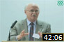
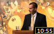
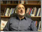
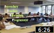

Videos
Recent Videos:
|
Duration: 28 minutes |

|
Duration: 20:00 minutes |

- Author Interviews
- IIS Lectures and Conferences
- IIS Special Events
- Interviews with Guest Speakers
- Other Videos
Author Interviews:


IIS Lectures and Conferences:
 |
Professor Angelika Neuwith 2015. |
|
Dr Reza Shah-Kazemi 2014. | |
 |
Professor Andrew Rippin, 2009. |
 |
German Orientalism and the Study of Islam by Professor Jacques Waardenburg, 1983 |
| British Orientalism and the Study of Islam by Professor C.E. Bosworth, 1983 | |
|  | Fatimid Feasts and Festivals by Professor Paul E Walker, 2010 |
| French Orientalism and the Study of Islam by Professor Mohammed Arkoun, 1983 | |
 |
Muslims & Islam: Between Powerlessness and Less Power by Farid Esack, 2010 |
| Luminous Witness: Fatimah al-Zahra in Indo-Persian Shi‘i Devotional Literature and Performance by Dr Karen Ruffle, 2010 |
|  | IIS Honours Class of 2007 Graduates, 2007 |
| Address by His Highness the Aga Khan, the IIS 25th Anniversary Graduation Ceremony, 2003 | |
| Word of God, Art of Man: The Qur’an and its Creative Expressions by His Highness the Aga Khan, 2003 | |
| Director Address by Professor Azim Nanji, the IIS 25th Anniversary Graduation Ceremony, 2003 | |
| Valedictory Address by Sabrina Datoo, the IIS 25th Anniversary Graduation Ceremony, 2003 |
| Contemporary Islams & Muslims Seminar Series Dr Amyn B. Sajoo | |
 |
Rumi to Adonis: The Conference of the Birds Dr Raficq Abdullah, 2007 |
| The Umma in the City: Cordoba, Isfahan & Marrakesh Dr Amira Bennison, 2008 | |
 |
Bridging Legal Modernity and Tradition: Alternative Dispute Resolution in Muslim Contexts Dr Mohamed Keshavjee, 2009 |
|  | Everyday Modernity in the Arab World: Culture vs. Ideology Professor Sami Zubaida, 2008 |
| Modernisation And Cultural Identity In Islam Dr Ismail Serageldin, 2008 | |
 |
Everyday Modern: Cultural Politics in Iran Professor Mohamad Tavakoli-Targhi, 2007 |
|  | Introduction to Secondary Teacher Education Programme (STEP) 2011 |
| Outstanding Patrons, Beautiful Objects, Metaphors for Humanism and Enlightenment by Alnoor Merchant, 2010 | |
| BBC's NewsNight Professor Azim Nanji, 2007 | |
 |
Expressions of the Pamir: A Continuing Tradition, 2000 |
 |
Expressions of the Pamir: Culture and Heritage of the Ismailis of Tajikistan, 1999 |
Last updated: 30/04/2015 13:25
 Gateways
Gateways